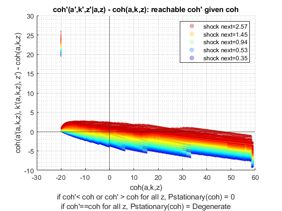
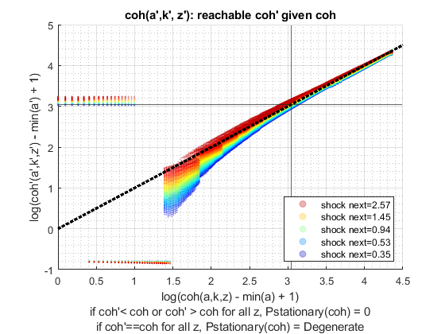

Derive Distributions for Risky + Safe Asset (Save + Borr) Interpolated-Percentage (Wrapper)
back to Fan's Dynamic Assets Repository Table of Content.
Contents
function [result_map] = ff_ipwkbz_ds_wrapper(varargin)
FF_IPWKBZ_DS_WRAPPER finds the stationary asset distributions
This is a warpper function.
Default
- it_subset = 5 is basic invoke quick test
- it_subset = 6 is invoke full test
- it_subset = 7 is profiling invoke
- it_subset = 8 is matlab publish
- it_subset = 9 is invoke operational (only final stats) and coh graph
it_param_set = 8; [param_map, support_map] = ffs_ipwkbz_set_default_param(it_param_set); param_map('bl_default') = true; % parameters can be set inside ffs_ipwkz_set_default_param or updated here % param_map('it_w_perc_n') = 50; % param_map('it_ak_perc_n') = param_map('it_w_perc_n'); % param_map('it_z_n') = 15; % param_map('fl_coh_interp_grid_gap') = 0.025; % param_map('it_c_interp_grid_gap') = 0.001; % param_map('fl_w_interp_grid_gap') = 0.25; % param_map('it_w_perc_n') = 100; % param_map('it_ak_perc_n') = param_map('it_w_perc_n'); % param_map('it_z_n') = 11; % param_map('fl_coh_interp_grid_gap') = 0.1; % param_map('it_c_interp_grid_gap') = 10^-4; % param_map('fl_w_interp_grid_gap') = 0.1; % param_map('it_w_perc_n') = 100; % param_map('fl_r_save') = 0.025; % param_map('fl_r_borr') = 0.025; % These parameters below for comparison with abz_fibs model % param_map('fl_r_save') = 0.025; % param_map('fl_r_borr') = 0.095; % param_map('fl_c_min') = 0.02; % param_map('st_analytical_stationary_type') = 'loop'; % param_map('st_analytical_stationary_type') = 'vector'; param_map('st_analytical_stationary_type') = 'eigenvector'; % get armt and func map [armt_map, func_map] = ffs_ipwkbz_get_funcgrid(param_map, support_map); % 1 for override default_params = {param_map support_map armt_map func_map};
Parse Parameters 1
% if varargin only has param_map and support_map, params_len = length(varargin); [default_params{1:params_len}] = varargin{:}; param_map = [param_map; default_params{1}]; support_map = [support_map; default_params{2}]; if params_len >= 1 && params_len <= 2 % If override param_map, re-generate armt and func if they are not % provided [armt_map, func_map] = ffs_ipwkbz_get_funcgrid(param_map, support_map); else % Override all armt_map = [armt_map; default_params{3}]; func_map = [func_map; default_params{4}]; end % if profile, profile DP + Dist here support_map('bl_profile_dist') = false; % append function name st_func_name = 'ff_ipwkbz_ds_wrapper'; support_map('st_profile_name_main') = [st_func_name support_map('st_profile_name_main')]; support_map('st_mat_name_main') = [st_func_name support_map('st_mat_name_main')]; support_map('st_img_name_main') = [st_func_name support_map('st_img_name_main')];
Parse Parameters
% param_map params_group = values(param_map, {'st_analytical_stationary_type'}); [st_analytical_stationary_type] = params_group{:}; % support_map params_group = values(support_map, ... {'st_profile_path', 'st_profile_prefix', 'st_profile_name_main', 'st_profile_suffix','bl_time'}); [st_profile_path, st_profile_prefix, st_profile_name_main, st_profile_suffix, bl_time] = params_group{:};
Start Profiler and Timer
Start Profile
if (it_param_set == 7) close all; profile off; profile on; end % Start Timer if (bl_time) tic; end
Solve DP
result_map = ff_ipwkbz_vf_vecsv(param_map, support_map, armt_map, func_map);
Elapsed time is 3.041383 seconds.
----------------------------------------
----------------------------------------
xxxxxxxxxxxxxxxxxxxxxxxxxxxxxxxxxxxxxxxx
xxxxxxxxxxxxxxxxxxxxxxxxxxxxxxxxxxxxxxxx
Begin: Show all key and value pairs from container
CONTAINER NAME: SUPPORT_MAP
----------------------------------------
Map with properties:
Count: 43
KeyType: char
ValueType: any
xxxxxxxxxxxxxxxxxxxxxxxxxxxxxxxxxxxxxxxx
xxxxxxxxxxxxxxxxxxxxxxxxxxxxxxxxxxxxxxxx
----------------------------------------
----------------------------------------
pos = 1 ; key = bl_display ; val = false
pos = 2 ; key = bl_display_defparam ; val = true
pos = 3 ; key = bl_display_dist ; val = false
pos = 4 ; key = bl_display_evf ; val = false
pos = 5 ; key = bl_display_final ; val = false
pos = 6 ; key = bl_display_final_dist ; val = true
pos = 7 ; key = bl_display_final_dist_detail ; val = true
pos = 8 ; key = bl_display_funcgrids ; val = false
pos = 9 ; key = bl_graph ; val = true
pos = 10 ; key = bl_graph_coh_t_coh ; val = true
pos = 11 ; key = bl_graph_evf ; val = false
pos = 12 ; key = bl_graph_funcgrids ; val = false
pos = 13 ; key = bl_graph_funcgrids_detail ; val = false
pos = 14 ; key = bl_graph_onebyones ; val = true
pos = 15 ; key = bl_graph_pol_lvl ; val = false
pos = 16 ; key = bl_graph_pol_pct ; val = false
pos = 17 ; key = bl_graph_val ; val = false
pos = 18 ; key = bl_img_save ; val = false
pos = 19 ; key = bl_mat ; val = false
pos = 20 ; key = bl_post ; val = true
pos = 21 ; key = bl_profile ; val = false
pos = 22 ; key = bl_profile_dist ; val = false
pos = 23 ; key = bl_time ; val = true
pos = 24 ; key = it_display_every ; val = 20
pos = 25 ; key = it_display_final_colmax ; val = 12
pos = 26 ; key = it_display_final_rowmax ; val = 100
pos = 27 ; key = it_display_summmat_colmax ; val = 7
pos = 28 ; key = it_display_summmat_rowmax ; val = 7
pos = 29 ; key = st_img_name_main ; val = ff_ipwkbz_vf_vecsvff_ipwkbz_ds_wrapper_default
pos = 30 ; key = st_img_path ; val = C:/Users/fan/CodeDynaAsset//m_ipwkbzr//solve/img/
pos = 31 ; key = st_img_prefix ; val =
pos = 32 ; key = st_img_suffix ; val = _p8.png
pos = 33 ; key = st_mat_name_main ; val = ff_ipwkbz_vf_vecsvff_ipwkbz_ds_wrapper_default
pos = 34 ; key = st_mat_path ; val = C:/Users/fan/CodeDynaAsset//m_ipwkbzr//solve/mat/
pos = 35 ; key = st_mat_prefix ; val =
pos = 36 ; key = st_mat_suffix ; val = _p8
pos = 37 ; key = st_mat_test_path ; val = C:/Users/fan/CodeDynaAsset//m_ipwkbzr//test/ff_ipwkbz_ds_vecsv/mat/
pos = 38 ; key = st_matimg_path_root ; val = C:/Users/fan/CodeDynaAsset//m_ipwkbzr/
pos = 39 ; key = st_profile_name_main ; val = ff_ipwkbz_vf_vecsvff_ipwkbz_ds_wrapper_default
pos = 40 ; key = st_profile_path ; val = C:/Users/fan/CodeDynaAsset//m_ipwkbzr//solve/profile/
pos = 41 ; key = st_profile_prefix ; val =
pos = 42 ; key = st_profile_suffix ; val = _p8
pos = 43 ; key = st_title_prefix ; val =
----------------------------------------
xxxxxxxxxxxxxxxxxxxxxxxxxxxxxxxxxxxxxxxx
Scalars in Container and Sizes and Basic Statistics
xxxxxxxxxxxxxxxxxxxxxxxxxxxxxxxxxxxxxxxx
i idx value
__ ___ _____
bl_display 1 1 0
bl_display_defparam 2 2 1
bl_display_dist 3 3 0
bl_display_evf 4 4 0
bl_display_final 5 5 0
bl_display_final_dist 6 6 1
bl_display_final_dist_detail 7 7 1
bl_display_funcgrids 8 8 0
bl_graph 9 9 1
bl_graph_coh_t_coh 10 10 1
bl_graph_evf 11 11 0
bl_graph_funcgrids 12 12 0
bl_graph_funcgrids_detail 13 13 0
bl_graph_onebyones 14 14 1
bl_graph_pol_lvl 15 15 0
bl_graph_pol_pct 16 16 0
bl_graph_val 17 17 0
bl_img_save 18 18 0
bl_mat 19 19 0
bl_post 20 20 1
bl_profile 21 21 0
bl_profile_dist 22 22 0
bl_time 23 23 1
it_display_every 24 24 20
it_display_final_colmax 25 25 12
it_display_final_rowmax 26 26 100
it_display_summmat_colmax 27 27 7
it_display_summmat_rowmax 28 28 7
----------------------------------------
xxxxxxxxxxxxxxxxxxxxxxxxxxxxxxxxxxxxxxxx
Strings in Container and Sizes and Basic Statistics
xxxxxxxxxxxxxxxxxxxxxxxxxxxxxxxxxxxxxxxx
i idx
__ ___
st_img_name_main 1 29
st_img_path 2 30
st_img_prefix 3 31
st_img_suffix 4 32
st_mat_name_main 5 33
st_mat_path 6 34
st_mat_prefix 7 35
st_mat_suffix 8 36
st_mat_test_path 9 37
st_matimg_path_root 10 38
st_profile_name_main 11 39
st_profile_path 12 40
st_profile_prefix 13 41
st_profile_suffix 14 42
st_title_prefix 15 43
----------------------------------------
----------------------------------------
xxxxxxxxxxxxxxxxxxxxxxxxxxxxxxxxxxxxxxxx
xxxxxxxxxxxxxxxxxxxxxxxxxxxxxxxxxxxxxxxx
Begin: Show all key and value pairs from container
CONTAINER NAME: ARMT_MAP
----------------------------------------
Map with properties:
Count: 21
KeyType: char
ValueType: any
xxxxxxxxxxxxxxxxxxxxxxxxxxxxxxxxxxxxxxxx
xxxxxxxxxxxxxxxxxxxxxxxxxxxxxxxxxxxxxxxx
----------------------------------------
----------------------------------------
pos = 1 ; key = ar_a_meshk ;rown= 772 ,coln= 1
ar_a_meshk :mu= 18.6145 ,sd= 22.347 ,min= -20 ,max= 57.2773
zi_1_c1
_______
zi_1_R1 -20
zi_2_R2 -19.9
zi_3_R3 -19.799
zi_386_r386 18.538
zi_770_r770 57.077
zi_771_r771 57.177
zi_772_r772 57.277
pos = 2 ; key = ar_a_meshk_ori ;rown= 35000 ,coln= 1
ar_a_meshk_ori :mu= -2.5107 ,sd= 15.6183 ,min= -20 ,max= 50
zi_1_c1
_______
zi_1_R1 -20
zi_2_R2 -20
zi_3_R3 -20
zi_17500_r17500 -20
zi_34998_r34998 -17.143
zi_34999_r34999 -18.571
zi_35000_r35000 -20
pos = 3 ; key = ar_ak_perc ;rown= 1 ,coln= 50
ar_ak_perc :mu= 0.5 ,sd= 0.2975 ,min= 0 ,max= 1
zi_1_C1 zi_2_C2 zi_3_C3 zi_25_c25 zi_48_c48 zi_49_c49 zi_50_c50
_______ ________ ________ _________ _________ _________ _________
zi_1_r1 0 0.020408 0.040816 0.4898 0.95918 0.97959 1
pos = 4 ; key = ar_interp_c_grid ;rown= 1 ,coln= 772572
ar_interp_c_grid :mu= 38.6486 ,sd= 22.3023 ,min= 0.02 ,max= 77.2773
zi_1_C1 zi_2_C2 zi_3_C3 zi_386286_c386286 zi_772570_c772570 zi_772571_c772571 zi_772572_c772572
_______ _______ _______ _________________ _________________ _________________ _________________
zi_1_r1 0.02 0.0201 0.0202 38.649 77.277 77.277 77.277
pos = 5 ; key = ar_interp_coh_grid ;rown= 1 ,coln= 772
ar_interp_coh_grid :mu= 18.6145 ,sd= 22.347 ,min= -20 ,max= 57.2773
zi_1_C1 zi_2_C2 zi_3_C3 zi_386_c386 zi_770_c770 zi_771_c771 zi_772_c772
_______ _______ _______ ___________ ___________ ___________ ___________
zi_1_r1 -20 -19.9 -19.799 18.538 57.077 57.177 57.277
pos = 6 ; key = ar_k_mesha ;rown= 772 ,coln= 1
ar_k_mesha :mu= 0 ,sd= 0 ,min= 0 ,max= 0
zi_1_c1
_______
zi_1_R1 0
zi_2_R2 0
zi_3_R3 0
zi_386_r386 0
zi_770_r770 0
zi_771_r771 0
zi_772_r772 0
pos = 7 ; key = ar_k_mesha_ori ;rown= 35000 ,coln= 1
ar_k_mesha_ori :mu= 17.4893 ,sd= 15.6183 ,min= 0 ,max= 70
zi_1_c1
_______
zi_1_R1 0
zi_2_R2 0
zi_3_R3 0
zi_17500_r17500 34.9
zi_34998_r34998 67.143
zi_34999_r34999 68.571
zi_35000_r35000 70
pos = 8 ; key = ar_stationary ;rown= 1 ,coln= 15
ar_stationary :mu= 0.066667 ,sd= 0.060897 ,min= 0.0027089 ,max= 0.16757
zi_1_C1 zi_2_C2 zi_3_C3 zi_8_C8 zi_13_c13 zi_14_c14 zi_15_c15
_________ _________ ________ _______ _________ _________ _________
zi_1_r1 0.0027089 0.0069499 0.018507 0.16757 0.018507 0.0069499 0.0027089
pos = 9 ; key = ar_w_level ;rown= 1 ,coln= 700
ar_w_level :mu= 14.9786 ,sd= 20.2441 ,min= -20 ,max= 50
zi_1_C1 zi_2_C2 zi_3_C3 zi_350_c350 zi_698_c698 zi_699_c699 zi_700_c700
_______ _______ _______ ___________ ___________ ___________ ___________
zi_1_r1 -20 -19.9 -19.799 14.9 49.799 49.9 50
pos = 10 ; key = ar_w_perc ;rown= 1 ,coln= 50
ar_w_perc :mu= 0.5 ,sd= 0.2975 ,min= 0 ,max= 1
zi_1_C1 zi_2_C2 zi_3_C3 zi_25_c25 zi_48_c48 zi_49_c49 zi_50_c50
_______ ________ ________ _________ _________ _________ _________
zi_1_r1 0 0.020408 0.040816 0.4898 0.95918 0.97959 1
pos = 11 ; key = ar_z ;rown= 1 ,coln= 15
ar_z :mu= 1.1347 ,sd= 0.69878 ,min= 0.34741 ,max= 2.567
zi_1_C1 zi_2_C2 zi_3_C3 zi_8_C8 zi_13_c13 zi_14_c14 zi_15_c15
_______ _______ _______ _______ _________ _________ _________
zi_1_r1 0.34741 0.40076 0.4623 0.94436 1.9291 2.2253 2.567
pos = 12 ; key = it_ameshk_n ; val = 772
pos = 13 ; key = mt_coh_wkb ;rown= 772 ,coln= 15
mt_coh_wkb :mu= 18.6145 ,sd= 22.3335 ,min= -20 ,max= 57.2773
zi_1_C1 zi_2_C2 zi_3_C3 zi_8_C8 zi_13_c13 zi_14_c14 zi_15_c15
_______ _______ _______ _______ _________ _________ _________
zi_1_R1 -20 -20 -20 -20 -20 -20 -20
zi_2_R2 -19.9 -19.9 -19.9 -19.9 -19.9 -19.9 -19.9
zi_3_R3 -19.799 -19.799 -19.799 -19.799 -19.799 -19.799 -19.799
zi_386_r386 18.538 18.538 18.538 18.538 18.538 18.538 18.538
zi_770_r770 57.077 57.077 57.077 57.077 57.077 57.077 57.077
zi_771_r771 57.177 57.177 57.177 57.177 57.177 57.177 57.177
zi_772_r772 57.277 57.277 57.277 57.277 57.277 57.277 57.277
pos = 14 ; key = mt_coh_wkb_ori ;rown= 35000 ,coln= 15
mt_coh_wkb_ori :mu= 16.2108 ,sd= 20.8413 ,min= -21.4564 ,max= 57.2773
zi_1_C1 zi_2_C2 zi_3_C3 zi_8_C8 zi_13_c13 zi_14_c14 zi_15_c15
_______ _______ _______ _______ _________ _________ _________
zi_1_R1 -21.456 -21.456 -21.456 -21.456 -21.456 -21.456 -21.456
zi_2_R2 -21.456 -21.456 -21.456 -21.456 -21.456 -21.456 -21.456
zi_3_R3 -21.456 -21.456 -21.456 -21.456 -21.456 -21.456 -21.456
zi_17500_r17500 11.9 12.091 12.312 14.044 17.582 18.646 19.874
zi_34998_r34998 45.023 45.266 45.546 47.738 52.215 53.562 55.116
zi_34999_r34999 44.785 45.03 45.312 47.52 52.032 53.389 54.955
zi_35000_r35000 44.547 44.793 45.077 47.302 51.848 53.215 54.792
pos = 15 ; key = mt_interp_coh_grid_mesh_w_perc ;rown= 50 ,coln= 772
mt_interp_coh_grid_mesh_w_perc :mu= 18.6145 ,sd= 22.3329 ,min= -20 ,max= 57.2773
zi_1_C1 zi_2_C2 zi_3_C3 zi_386_c386 zi_770_c770 zi_771_c771 zi_772_c772
_______ _______ _______ ___________ ___________ ___________ ___________
zi_1_R1 -20 -19.9 -19.799 18.538 57.077 57.177 57.277
zi_2_R2 -20 -19.9 -19.799 18.538 57.077 57.177 57.277
zi_3_R3 -20 -19.9 -19.799 18.538 57.077 57.177 57.277
zi_25_r25 -20 -19.9 -19.799 18.538 57.077 57.177 57.277
zi_48_r48 -20 -19.9 -19.799 18.538 57.077 57.177 57.277
zi_49_r49 -20 -19.9 -19.799 18.538 57.077 57.177 57.277
zi_50_r50 -20 -19.9 -19.799 18.538 57.077 57.177 57.277
pos = 16 ; key = mt_interp_coh_grid_mesh_z ;rown= 772 ,coln= 15
mt_interp_coh_grid_mesh_z :mu= 18.6145 ,sd= 22.3335 ,min= -20 ,max= 57.2773
zi_1_C1 zi_2_C2 zi_3_C3 zi_8_C8 zi_13_c13 zi_14_c14 zi_15_c15
_______ _______ _______ _______ _________ _________ _________
zi_1_R1 -20 -20 -20 -20 -20 -20 -20
zi_2_R2 -19.9 -19.9 -19.9 -19.9 -19.9 -19.9 -19.9
zi_3_R3 -19.799 -19.799 -19.799 -19.799 -19.799 -19.799 -19.799
zi_386_r386 18.538 18.538 18.538 18.538 18.538 18.538 18.538
zi_770_r770 57.077 57.077 57.077 57.077 57.077 57.077 57.077
zi_771_r771 57.177 57.177 57.177 57.177 57.177 57.177 57.177
zi_772_r772 57.277 57.277 57.277 57.277 57.277 57.277 57.277
pos = 17 ; key = mt_k ;rown= 50 ,coln= 700
mt_k :mu= 17.4893 ,sd= 15.6183 ,min= 0 ,max= 70
zi_1_C1 zi_2_C2 zi_3_C3 zi_350_c350 zi_698_c698 zi_699_c699 zi_700_c700
_______ _________ _________ ___________ ___________ ___________ ___________
zi_1_R1 0 0 0 0 0 0 0
zi_2_R2 0 0.0020467 0.0040933 0.71224 1.4245 1.4265 1.4286
zi_3_R3 0 0.0040933 0.0081867 1.4245 2.849 2.853 2.8571
zi_25_r25 0 0.04912 0.09824 17.094 34.187 34.237 34.286
zi_48_r48 0 0.096193 0.19239 33.475 66.95 67.047 67.143
zi_49_r49 0 0.09824 0.19648 34.187 68.375 68.473 68.571
zi_50_r50 0 0.10029 0.20057 34.9 69.799 69.9 70
pos = 18 ; key = mt_w_by_interp_coh_interp_grid ;rown= 50 ,coln= 772
mt_w_by_interp_coh_interp_grid :mu= -0.69276 ,sd= 17.2418 ,min= -20 ,max= 57.2773
zi_1_C1 zi_2_C2 zi_3_C3 zi_386_c386 zi_770_c770 zi_771_c771 zi_772_c772
_______ _______ _______ ___________ ___________ ___________ ___________
zi_1_R1 -20 -20 -20 -20 -20 -20 -20
zi_2_R2 -20 -19.998 -19.996 -19.214 -18.427 -18.425 -18.423
zi_3_R3 -20 -19.996 -19.992 -18.427 -16.854 -16.85 -16.846
zi_25_r25 -20 -19.951 -19.902 -1.1241 17.752 17.801 17.85
zi_48_r48 -20 -19.904 -19.807 16.965 53.931 54.027 54.123
zi_49_r49 -20 -19.902 -19.803 17.752 55.504 55.602 55.7
zi_50_r50 -20 -19.9 -19.799 18.538 57.077 57.177 57.277
pos = 19 ; key = mt_z_mesh_coh_interp_grid ;rown= 772 ,coln= 15
mt_z_mesh_coh_interp_grid :mu= 1.1347 ,sd= 0.67511 ,min= 0.34741 ,max= 2.567
zi_1_C1 zi_2_C2 zi_3_C3 zi_8_C8 zi_13_c13 zi_14_c14 zi_15_c15
_______ _______ _______ _______ _________ _________ _________
zi_1_R1 0.34741 0.40076 0.4623 0.94436 1.9291 2.2253 2.567
zi_2_R2 0.34741 0.40076 0.4623 0.94436 1.9291 2.2253 2.567
zi_3_R3 0.34741 0.40076 0.4623 0.94436 1.9291 2.2253 2.567
zi_386_r386 0.34741 0.40076 0.4623 0.94436 1.9291 2.2253 2.567
zi_770_r770 0.34741 0.40076 0.4623 0.94436 1.9291 2.2253 2.567
zi_771_r771 0.34741 0.40076 0.4623 0.94436 1.9291 2.2253 2.567
zi_772_r772 0.34741 0.40076 0.4623 0.94436 1.9291 2.2253 2.567
pos = 20 ; key = mt_z_mesh_coh_wkb ;rown= 35000 ,coln= 15
mt_z_mesh_coh_wkb :mu= 1.1347 ,sd= 0.67508 ,min= 0.34741 ,max= 2.567
zi_1_C1 zi_2_C2 zi_3_C3 zi_8_C8 zi_13_c13 zi_14_c14 zi_15_c15
_______ _______ _______ _______ _________ _________ _________
zi_1_R1 0.34741 0.40076 0.4623 0.94436 1.9291 2.2253 2.567
zi_2_R2 0.34741 0.40076 0.4623 0.94436 1.9291 2.2253 2.567
zi_3_R3 0.34741 0.40076 0.4623 0.94436 1.9291 2.2253 2.567
zi_17500_r17500 0.34741 0.40076 0.4623 0.94436 1.9291 2.2253 2.567
zi_34998_r34998 0.34741 0.40076 0.4623 0.94436 1.9291 2.2253 2.567
zi_34999_r34999 0.34741 0.40076 0.4623 0.94436 1.9291 2.2253 2.567
zi_35000_r35000 0.34741 0.40076 0.4623 0.94436 1.9291 2.2253 2.567
pos = 21 ; key = mt_z_trans ;rown= 15 ,coln= 15
mt_z_trans :mu= 0.066667 ,sd= 0.095337 ,min= 0 ,max= 0.27902
zi_1_C1 zi_2_C2 zi_3_C3 zi_8_C8 zi_13_c13 zi_14_c14 zi_15_c15
__________ __________ __________ __________ __________ __________ __________
zi_1_R1 0.26016 0.26831 0.25551 0.00012823 2.7001e-13 1.1102e-15 0
zi_2_R2 0.11232 0.19622 0.2763 0.00098855 1.5289e-11 9.3592e-14 3.3307e-16
zi_3_R3 0.037073 0.10492 0.2185 0.0055558 6.2811e-10 5.7438e-12 3.1863e-14
zi_8_R8 1.7181e-06 4.1008e-05 0.00061112 0.27902 0.00061112 4.1008e-05 1.7181e-06
zi_13_r13 3.1909e-14 5.7438e-12 6.2811e-10 0.0055558 0.2185 0.10492 0.037073
zi_14_r14 3.474e-16 9.3597e-14 1.5289e-11 0.00098855 0.2763 0.19622 0.11232
zi_15_r15 2.7412e-18 1.1057e-15 2.6998e-13 0.00012823 0.25551 0.26831 0.26016
----------------------------------------
xxxxxxxxxxxxxxxxxxxxxxxxxxxxxxxxxxxxxxxx
Matrix in Container and Sizes and Basic Statistics
xxxxxxxxxxxxxxxxxxxxxxxxxxxxxxxxxxxxxxxx
i idx rowN colN mean std min max
__ ___ _____ __________ ________ ________ _________ _______
ar_a_meshk 1 1 772 1 18.614 22.347 -20 57.277
ar_a_meshk_ori 2 2 35000 1 -2.5107 15.618 -20 50
ar_ak_perc 3 3 1 50 0.5 0.2975 0 1
ar_interp_c_grid 4 4 1 7.7257e+05 38.649 22.302 0.02 77.277
ar_interp_coh_grid 5 5 1 772 18.614 22.347 -20 57.277
ar_k_mesha 6 6 772 1 0 0 0 0
ar_k_mesha_ori 7 7 35000 1 17.489 15.618 0 70
ar_stationary 8 8 1 15 0.066667 0.060897 0.0027089 0.16757
ar_w_level 9 9 1 700 14.979 20.244 -20 50
ar_w_perc 10 10 1 50 0.5 0.2975 0 1
ar_z 11 11 1 15 1.1347 0.69878 0.34741 2.567
mt_coh_wkb 12 13 772 15 18.614 22.334 -20 57.277
mt_coh_wkb_ori 13 14 35000 15 16.211 20.841 -21.456 57.277
mt_interp_coh_grid_mesh_w_perc 14 15 50 772 18.614 22.333 -20 57.277
mt_interp_coh_grid_mesh_z 15 16 772 15 18.614 22.334 -20 57.277
mt_k 16 17 50 700 17.489 15.618 0 70
mt_w_by_interp_coh_interp_grid 17 18 50 772 -0.69276 17.242 -20 57.277
mt_z_mesh_coh_interp_grid 18 19 772 15 1.1347 0.67511 0.34741 2.567
mt_z_mesh_coh_wkb 19 20 35000 15 1.1347 0.67508 0.34741 2.567
mt_z_trans 20 21 15 15 0.066667 0.095337 0 0.27902
----------------------------------------
xxxxxxxxxxxxxxxxxxxxxxxxxxxxxxxxxxxxxxxx
Scalars in Container and Sizes and Basic Statistics
xxxxxxxxxxxxxxxxxxxxxxxxxxxxxxxxxxxxxxxx
i idx value
_ ___ _____
it_ameshk_n 1 12 772
----------------------------------------
----------------------------------------
xxxxxxxxxxxxxxxxxxxxxxxxxxxxxxxxxxxxxxxx
xxxxxxxxxxxxxxxxxxxxxxxxxxxxxxxxxxxxxxxx
Begin: Show all key and value pairs from container
CONTAINER NAME: PARAM_MAP
----------------------------------------
Map with properties:
Count: 35
KeyType: char
ValueType: any
xxxxxxxxxxxxxxxxxxxxxxxxxxxxxxxxxxxxxxxx
xxxxxxxxxxxxxxxxxxxxxxxxxxxxxxxxxxxxxxxx
----------------------------------------
----------------------------------------
pos = 1 ; key = bl_default ; val = true
pos = 2 ; key = fl_Amean ; val = 1
pos = 3 ; key = fl_alpha ; val = 0.36
pos = 4 ; key = fl_b_bd ; val = -20
pos = 5 ; key = fl_beta ; val = 0.94
pos = 6 ; key = fl_c_min ; val = 0.02
pos = 7 ; key = fl_coh_interp_grid_gap ; val = 0.1
pos = 8 ; key = fl_crra ; val = 1.5
pos = 9 ; key = fl_default_wprime ; val = 0
pos = 10 ; key = fl_delta ; val = 0.08
pos = 11 ; key = fl_k_max ; val = 70
pos = 12 ; key = fl_k_min ; val = 0
pos = 13 ; key = fl_nan_replace ; val = -9999
pos = 14 ; key = fl_r_borr ; val = 0.095
pos = 15 ; key = fl_r_save ; val = 0.025
pos = 16 ; key = fl_tol_dist ; val = 1e-05
pos = 17 ; key = fl_tol_pol ; val = 1e-05
pos = 18 ; key = fl_tol_val ; val = 1e-05
pos = 19 ; key = fl_w ; val = 0.44365
pos = 20 ; key = fl_w_interp_grid_gap ; val = 0.1
pos = 21 ; key = fl_w_max ; val = 50
pos = 22 ; key = fl_w_min ; val = -20
pos = 23 ; key = fl_z_mu ; val = 0
pos = 24 ; key = fl_z_rho ; val = 0.8
pos = 25 ; key = fl_z_sig ; val = 0.2
pos = 26 ; key = it_ak_perc_n ; val = 50
pos = 27 ; key = it_c_interp_grid_gap ; val = 0.0001
pos = 28 ; key = it_maxiter_dist ; val = 1000
pos = 29 ; key = it_maxiter_val ; val = 250
pos = 30 ; key = it_tol_pol_nochange ; val = 25
pos = 31 ; key = it_w_perc_n ; val = 50
pos = 32 ; key = it_z_n ; val = 15
pos = 33 ; key = st_analytical_stationary_type ; val = eigenvector
pos = 34 ; key = st_model ; val = ipwkbz
pos = 35 ; key = st_v_coh_z_interp_method ; val = method_cell
----------------------------------------
xxxxxxxxxxxxxxxxxxxxxxxxxxxxxxxxxxxxxxxx
Scalars in Container and Sizes and Basic Statistics
xxxxxxxxxxxxxxxxxxxxxxxxxxxxxxxxxxxxxxxx
i idx value
__ ___ _______
bl_default 1 1 1
fl_Amean 2 2 1
fl_alpha 3 3 0.36
fl_b_bd 4 4 -20
fl_beta 5 5 0.94
fl_c_min 6 6 0.02
fl_coh_interp_grid_gap 7 7 0.1
fl_crra 8 8 1.5
fl_default_wprime 9 9 0
fl_delta 10 10 0.08
fl_k_max 11 11 70
fl_k_min 12 12 0
fl_nan_replace 13 13 -9999
fl_r_borr 14 14 0.095
fl_r_save 15 15 0.025
fl_tol_dist 16 16 1e-05
fl_tol_pol 17 17 1e-05
fl_tol_val 18 18 1e-05
fl_w 19 19 0.44365
fl_w_interp_grid_gap 20 20 0.1
fl_w_max 21 21 50
fl_w_min 22 22 -20
fl_z_mu 23 23 0
fl_z_rho 24 24 0.8
fl_z_sig 25 25 0.2
it_ak_perc_n 26 26 50
it_c_interp_grid_gap 27 27 0.0001
it_maxiter_dist 28 28 1000
it_maxiter_val 29 29 250
it_tol_pol_nochange 30 30 25
it_w_perc_n 31 31 50
it_z_n 32 32 15
----------------------------------------
xxxxxxxxxxxxxxxxxxxxxxxxxxxxxxxxxxxxxxxx
Strings in Container and Sizes and Basic Statistics
xxxxxxxxxxxxxxxxxxxxxxxxxxxxxxxxxxxxxxxx
i idx
_ ___
st_analytical_stationary_type 1 33
st_model 2 34
st_v_coh_z_interp_method 3 35
----------------------------------------
----------------------------------------
xxxxxxxxxxxxxxxxxxxxxxxxxxxxxxxxxxxxxxxx
xxxxxxxxxxxxxxxxxxxxxxxxxxxxxxxxxxxxxxxx
Begin: Show all key and value pairs from container
CONTAINER NAME: FUNC_MAP
----------------------------------------
Map with properties:
Count: 7
KeyType: char
ValueType: any
xxxxxxxxxxxxxxxxxxxxxxxxxxxxxxxxxxxxxxxx
xxxxxxxxxxxxxxxxxxxxxxxxxxxxxxxxxxxxxxxx
----------------------------------------
----------------------------------------
pos = 1 ; key = f_coh ; val = @(z,b,k)(f_prod(z,k)+k*(1-fl_delta)+fl_w+b.*(1+fl_r_save).*(b>0)+b.*(1+fl_r_borr).*(b<=0))
pos = 2 ; key = f_cons ; val = @(coh,bprime,kprime)(coh-kprime-bprime)
pos = 3 ; key = f_inc ; val = @(z,b,k)(f_prod(z,k)-(fl_delta)*k+fl_w+b.*(fl_r_save).*(b>0)+b.*(fl_r_borr).*(b<=0))
pos = 4 ; key = f_prod ; val = @(z,k)((fl_Amean.*(z)).*(k.^(fl_alpha)))
pos = 5 ; key = f_util_crra ; val = @(c)(((c).^(1-fl_crra)-1)./(1-fl_crra))
pos = 6 ; key = f_util_log ; val = @(c)log(c)
pos = 7 ; key = f_util_standin ; val = @(z,b,k)f_util_log((f_coh(z,b,k)-fl_b_bd).*((f_coh(z,b,k)-fl_b_bd)>fl_c_min)+fl_c_min.*((f_coh(z,b,k)-fl_b_bd)<=fl_c_min))
----------------------------------------
xxxxxxxxxxxxxxxxxxxxxxxxxxxxxxxxxxxxxxxx
Scalars in Container and Sizes and Basic Statistics
xxxxxxxxxxxxxxxxxxxxxxxxxxxxxxxxxxxxxxxx
i idx xFunction
_ ___ _________
f_coh 1 1 1
f_cons 2 2 2
f_inc 3 3 3
f_prod 4 4 4
f_util_crra 5 5 5
f_util_log 6 6 6
f_util_standin 7 7 7
----------------------------------------
----------------------------------------
xxxxxxxxxxxxxxxxxxxxxxxxxxxxxxxxxxxxxxxx
xxxxxxxxxxxxxxxxxxxxxxxxxxxxxxxxxxxxxxxx
Begin: Show all key and value pairs from container
CONTAINER NAME: RESULT_MAP
----------------------------------------
Map with properties:
Count: 11
KeyType: char
ValueType: any
xxxxxxxxxxxxxxxxxxxxxxxxxxxxxxxxxxxxxxxx
xxxxxxxxxxxxxxxxxxxxxxxxxxxxxxxxxxxxxxxx
----------------------------------------
----------------------------------------
pos = 1 ; key = ar_pol_diff_norm ;rown= 133 ,coln= 1
ar_pol_diff_norm :mu= 58.4991 ,sd= 291.8239 ,min= 0 ,max= 2431.9588
zi_1_c1
_______
zi_1_R1 2150.9
zi_2_R2 2432
zi_3_R3 884.14
zi_67_R67 1.5197
zi_131_r131 0
zi_132_r132 0
zi_133_r133 0
pos = 2 ; key = ar_st_pol_names ; val = cl_mt_coh cl_mt_pol_a cl_mt_pol_k cl_mt_pol_c
pos = 3 ; key = ar_val_diff_norm ;rown= 133 ,coln= 1
ar_val_diff_norm :mu= 10.2763 ,sd= 29.2676 ,min= 0.00091964 ,max= 179.6967
zi_1_c1
__________
zi_1_R1 179.7
zi_2_R2 173.52
zi_3_R3 133.72
zi_67_R67 0.082403
zi_131_r131 0.0010401
zi_132_r132 0.000978
zi_133_r133 0.00091964
pos = 4 ; key = cl_mt_coh ;rown= 772 ,coln= 15
cl_mt_coh :mu= 18.6145 ,sd= 22.3335 ,min= -20 ,max= 57.2773
zi_1_C1 zi_2_C2 zi_3_C3 zi_8_C8 zi_13_c13 zi_14_c14 zi_15_c15
_______ _______ _______ _______ _________ _________ _________
zi_1_R1 -20 -20 -20 -20 -20 -20 -20
zi_2_R2 -19.9 -19.9 -19.9 -19.9 -19.9 -19.9 -19.9
zi_3_R3 -19.799 -19.799 -19.799 -19.799 -19.799 -19.799 -19.799
zi_386_r386 18.538 18.538 18.538 18.538 18.538 18.538 18.538
zi_770_r770 57.077 57.077 57.077 57.077 57.077 57.077 57.077
zi_771_r771 57.177 57.177 57.177 57.177 57.177 57.177 57.177
zi_772_r772 57.277 57.277 57.277 57.277 57.277 57.277 57.277
pos = 5 ; key = cl_mt_cons ;rown= 772 ,coln= 15
cl_mt_cons :mu= 2.9005 ,sd= 2.8392 ,min= -20 ,max= 7.8854
zi_1_C1 zi_2_C2 zi_3_C3 zi_8_C8 zi_13_c13 zi_14_c14 zi_15_c15
_______ _______ _______ _______ _________ _________ _________
zi_1_R1 -20 -20 -20 -20 -20 -20 -20
zi_2_R2 -19.9 -19.9 -19.9 -19.9 -19.9 -19.9 -19.9
zi_3_R3 -19.799 -19.799 -19.799 -19.799 -19.799 -19.799 -19.799
zi_386_r386 2.3595 2.3595 3.146 3.146 3.146 3.146 3.9325
zi_770_r770 7.865 7.865 7.865 7.865 7.865 7.865 7.865
zi_771_r771 7.8752 7.8752 7.8752 7.8752 7.8752 7.8752 7.8752
zi_772_r772 7.8854 7.8854 7.8854 7.8854 7.8854 7.8854 7.8854
pos = 6 ; key = cl_mt_pol_a ;rown= 772 ,coln= 15
cl_mt_pol_a :mu= 9.3947 ,sd= 19.047 ,min= -20 ,max= 49.1717
zi_1_C1 zi_2_C2 zi_3_C3 zi_8_C8 zi_13_c13 zi_14_c14 zi_15_c15
________ ________ _______ _______ _________ _________ _________
zi_1_R1 -0.81633 -0.81633 -1.2245 -2.8571 -6.5306 -7.7551 -9.3878
zi_2_R2 -0.81633 -0.81633 -1.2245 -2.8571 -6.5306 -7.7551 -9.3878
zi_3_R3 -0.81633 -0.81633 -1.2245 -2.8571 -6.5306 -7.7551 -9.3878
zi_386_r386 13.964 13.964 12.503 8.8917 0.22417 0.22417 -0.22526
zi_770_r770 47.799 46.387 46.387 42.149 33.674 31.045 29.437
zi_771_r771 47.887 46.473 46.473 42.23 33.744 32.33 29.449
zi_772_r772 47.976 46.56 46.56 42.311 33.814 32.398 28.24
pos = 7 ; key = cl_mt_pol_c ;rown= 772 ,coln= 15
cl_mt_pol_c :mu= 3.1183 ,sd= 1.581 ,min= 0.02 ,max= 7.8854
zi_1_C1 zi_2_C2 zi_3_C3 zi_8_C8 zi_13_c13 zi_14_c14 zi_15_c15
_______ _______ _______ _______ _________ _________ _________
zi_1_R1 0.02 0.02 0.02 0.02 0.02 0.02 0.02
zi_2_R2 0.02 0.02 0.02 0.02 0.02 0.02 0.02
zi_3_R3 0.02 0.02 0.02 0.02 0.02 0.02 0.02
zi_386_r386 2.3595 2.3595 3.146 3.146 3.146 3.146 3.9325
zi_770_r770 7.865 7.865 7.865 7.865 7.865 7.865 7.865
zi_771_r771 7.8752 7.8752 7.8752 7.8752 7.8752 7.8752 7.8752
zi_772_r772 7.8854 7.8854 7.8854 7.8854 7.8854 7.8854 7.8854
pos = 8 ; key = cl_mt_pol_k ;rown= 772 ,coln= 15
cl_mt_pol_k :mu= 6.3193 ,sd= 5.1683 ,min= 0 ,max= 22.2236
zi_1_C1 zi_2_C2 zi_3_C3 zi_8_C8 zi_13_c13 zi_14_c14 zi_15_c15
_______ _______ _______ _______ _________ _________ _________
zi_1_R1 0.81633 0.81633 1.2245 2.8571 6.5306 7.7551 9.3878
zi_2_R2 0.81633 0.81633 1.2245 2.8571 6.5306 7.7551 9.3878
zi_3_R3 0.81633 0.81633 1.2245 2.8571 6.5306 7.7551 9.3878
zi_386_r386 2.215 2.215 2.8892 6.5006 15.168 15.168 14.831
zi_770_r770 1.4125 2.825 2.825 7.0624 15.537 18.167 19.775
zi_771_r771 1.4143 2.8286 2.8286 7.0716 15.558 16.972 19.853
zi_772_r772 1.4162 2.8323 2.8323 7.0808 15.578 16.994 21.151
pos = 9 ; key = mt_pol_idx ;rown= 772 ,coln= 15
mt_pol_idx :mu= 19318.9589 ,sd= 11146.9408 ,min= 1 ,max= 38595
zi_1_C1 zi_2_C2 zi_3_C3 zi_8_C8 zi_13_c13 zi_14_c14 zi_15_c15
_______ _______ _______ _______ _________ _________ _________
zi_1_R1 1 1 1 1 1 1 1
zi_2_R2 91 91 91 91 91 91 91
zi_3_R3 146 146 146 146 146 146 146
zi_386_r386 19297 19297 19296 19296 19296 19296 19295
zi_770_r770 38495 38495 38495 38495 38495 38495 38495
zi_771_r771 38545 38545 38545 38545 38545 38545 38545
zi_772_r772 38595 38595 38595 38595 38595 38595 38595
pos = 10 ; key = mt_pol_perc_change ;rown= 133 ,coln= 15
mt_pol_perc_change :mu= 0.088391 ,sd= 0.23978 ,min= 0 ,max= 1
zi_1_C1 zi_2_C2 zi_3_C3 zi_8_C8 zi_13_c13 zi_14_c14 zi_15_c15
_______ _______ _________ _________ _________ _________ _________
zi_1_R1 1 1 1 1 1 1 1
zi_2_R2 1 1 1 0.9728 0.90933 0.88601 0.86334
zi_3_R3 0.94948 0.9307 0.9171 0.96373 0.92617 0.90933 0.8899
zi_67_R67 0 0 0.0012953 0.0012953 0 0.0012953 0
zi_131_r131 0 0 0 0 0 0 0
zi_132_r132 0 0 0 0 0 0 0
zi_133_r133 0 0 0 0 0 0 0
pos = 11 ; key = mt_val ;rown= 772 ,coln= 15
mt_val :mu= 8.527 ,sd= 7.1164 ,min= -9.9353 ,max= 16.5979
zi_1_C1 zi_2_C2 zi_3_C3 zi_8_C8 zi_13_c13 zi_14_c14 zi_15_c15
_______ _______ _______ _______ _________ _________ _________
zi_1_R1 -9.9353 -9.6945 -9.4082 -7.4998 -4.9849 -4.4625 -3.9715
zi_2_R2 -9.9353 -9.6945 -9.4082 -7.4998 -4.9849 -4.4625 -3.9715
zi_3_R3 -9.9353 -9.6945 -9.4082 -7.4998 -4.9849 -4.4625 -3.9715
zi_386_r386 10.255 10.358 10.48 11.263 12.344 12.589 12.824
zi_770_r770 15.398 15.441 15.492 15.827 16.343 16.467 16.587
zi_771_r771 15.407 15.45 15.5 15.835 16.35 16.473 16.592
zi_772_r772 15.415 15.458 15.509 15.843 16.357 16.479 16.598
----------------------------------------
xxxxxxxxxxxxxxxxxxxxxxxxxxxxxxxxxxxxxxxx
Matrix in Container and Sizes and Basic Statistics
xxxxxxxxxxxxxxxxxxxxxxxxxxxxxxxxxxxxxxxx
i idx rowN colN mean std min max
__ ___ ____ ____ ________ _______ __________ ______
ar_pol_diff_norm 1 1 133 1 58.499 291.82 0 2432
ar_val_diff_norm 2 3 133 1 10.276 29.268 0.00091964 179.7
cl_mt_coh 3 4 772 15 18.614 22.334 -20 57.277
cl_mt_cons 4 5 772 15 2.9005 2.8392 -20 7.8854
cl_mt_pol_a 5 6 772 15 9.3947 19.047 -20 49.172
cl_mt_pol_c 6 7 772 15 3.1183 1.581 0.02 7.8854
cl_mt_pol_k 7 8 772 15 6.3193 5.1683 0 22.224
mt_pol_idx 8 9 772 15 19319 11147 1 38595
mt_pol_perc_change 9 10 133 15 0.088391 0.23978 0 1
mt_val 10 11 772 15 8.527 7.1164 -9.9353 16.598
----------------------------------------
xxxxxxxxxxxxxxxxxxxxxxxxxxxxxxxxxxxxxxxx
Strings in Container and Sizes and Basic Statistics
xxxxxxxxxxxxxxxxxxxxxxxxxxxxxxxxxxxxxxxx
i idx
_ ___
ar_st_pol_names 1 2
  Derive Distribution
if (strcmp(st_analytical_stationary_type, 'loop')) result_map = ff_iwkz_ds(param_map, support_map, armt_map, func_map, result_map); elseif (strcmp(st_analytical_stationary_type, 'vector')) result_map = ff_iwkz_ds_vec(param_map, support_map, armt_map, func_map, result_map); elseif (strcmp(st_analytical_stationary_type, 'eigenvector')) result_map = ff_iwkz_ds_vecsv(param_map, support_map, armt_map, func_map, result_map); end
Elapsed time is 1.082799 seconds.
----------------------------------------
xxxxxxxxxxxxxxxxxxxxxxxxxxxxxxxxxxxxxxxx
Summary Statistics for: cl_mt_coh
xxxxxxxxxxxxxxxxxxxxxxxxxxxxxxxxxxxxxxxx
----------------------------------------
fl_choice_mean
5.6703
fl_choice_sd
4.5213
fl_choice_coefofvar
0.7974
fl_choice_prob_zero
4.1301e-04
fl_choice_prob_below_zero
0.0557
fl_choice_prob_above_zero
0.9439
fl_choice_prob_max
2.2861e-13
tb_disc_cumu
cl_mt_cohDiscreteVal cl_mt_cohDiscreteValProbMass CDF cumsumFrac
____________________ ____________________________ _______ __________
-20 0.0019236 0.19236 -0.0067847
-19.9 -7.5536e-29 0.19236 -0.0067847
-19.799 1.7984e-28 0.19236 -0.0067847
-19.699 -3.659e-13 0.19236 -0.0067847
-19.599 -8.5304e-14 0.19236 -0.0067847
-19.498 4.6615e-13 0.19236 -0.0067847
-19.398 4.7563e-11 0.19236 -0.0067847
-19.297 1.1526e-08 0.19236 -0.0067847
-19.197 1.191e-07 0.19237 -0.0067852
-19.097 8.2017e-07 0.19245 -0.0067879
cl_mt_cohDiscreteVal cl_mt_cohDiscreteValProbMass CDF cumsumFrac
____________________ ____________________________ ___ __________
56.374 4.2703e-13 100 1
56.474 2.3093e-13 100 1
56.575 1.733e-13 100 1
56.675 1.6074e-13 100 1
56.775 7.9038e-14 100 1
56.876 8.8788e-14 100 1
56.976 8.4159e-14 100 1
57.077 7.1498e-14 100 1
57.177 7.6851e-14 100 1
57.277 2.2861e-13 100 1
tb_prob_drv
percentiles cl_mt_cohDiscreteValPercentileValues fracOfSumHeldBelowThisPercentile
___________ ____________________________________ ________________________________
0.1 -20 -0.0067847
1 -11.369 -0.028351
5 -0.32942 -0.053919
10 1.8785 -0.044578
15 2.4807 -0.025726
20 2.9825 0.0013046
25 3.5846 0.030781
35 4.6886 0.10644
50 5.8929 0.24253
65 6.7961 0.42885
75 7.3983 0.54088
80 7.9001 0.6031
85 8.8033 0.67942
90 10.208 0.76175
95 12.717 0.86028
99 18.237 0.9633
99.9 25.363 0.99506
----------------------------------------
xxxxxxxxxxxxxxxxxxxxxxxxxxxxxxxxxxxxxxxx
Summary Statistics for: cl_mt_pol_a
xxxxxxxxxxxxxxxxxxxxxxxxxxxxxxxxxxxxxxxx
----------------------------------------
fl_choice_mean
-0.5019
fl_choice_sd
2.7406
fl_choice_coefofvar
-5.4606
fl_choice_prob_zero
0
fl_choice_prob_below_zero
0.5408
fl_choice_prob_above_zero
0.4592
fl_choice_prob_max
1.4385e-30
tb_disc_cumu
cl_mt_pol_aDiscreteVal cl_mt_pol_aDiscreteValProbMass CDF cumsumFrac
______________________ ______________________________ _______ __________
-20 0.0032757 0.32757 0.13053
-19.996 1.7567e-05 0.32932 0.13123
-19.958 2.6761e-06 0.32959 0.13134
-19.956 3.3795e-05 0.33297 0.13268
-19.926 3.7024e-06 0.33334 0.13283
-19.918 1.8711e-06 0.33353 0.13291
-19.911 1.0759e-05 0.3346 0.13333
-19.9 4.3637e-05 0.33897 0.13506
-19.897 1.5789e-05 0.34055 0.13569
-19.896 1.5958e-06 0.34071 0.13575
cl_mt_pol_aDiscreteVal cl_mt_pol_aDiscreteValProbMass CDF cumsumFrac
______________________ ______________________________ ___ __________
48.527 1.1872e-30 100 1
48.574 -5.1267e-30 100 1
48.619 5.3985e-29 100 1
48.668 3.7297e-30 100 1
48.711 -8.76e-30 100 1
48.803 5.9346e-30 100 1
48.895 6.8879e-30 100 1
48.987 -2.5422e-30 100 1
49.08 -1.64e-33 100 1
49.172 1.4385e-30 100 1
tb_prob_drv
percentiles cl_mt_pol_aDiscreteValPercentileValues fracOfSumHeldBelowThisPercentile
___________ ______________________________________ ________________________________
0.1 -20 0.13053
1 -14.348 0.35978
5 -4.291 0.93179
10 -2.3413 1.2391
15 -1.403 1.4281
20 -0.81601 1.5367
25 -0.38778 1.5958
35 -0.19341 1.6523
50 -0.046694 1.6807
65 0.090993 1.6715
75 0.1766 1.6463
80 0.24674 1.6229
85 0.33702 1.597
90 0.62168 1.5545
95 2.0148 1.4363
99 5.9348 1.1653
99.9 11.469 1.0271
----------------------------------------
xxxxxxxxxxxxxxxxxxxxxxxxxxxxxxxxxxxxxxxx
Summary Statistics for: cl_mt_pol_k
xxxxxxxxxxxxxxxxxxxxxxxxxxxxxxxxxxxxxxxx
----------------------------------------
fl_choice_mean
4.4274
fl_choice_sd
2.1725
fl_choice_coefofvar
0.4907
fl_choice_prob_zero
0.0019
fl_choice_prob_below_zero
0
fl_choice_prob_above_zero
0.9981
fl_choice_prob_max
8.2306e-11
tb_disc_cumu
cl_mt_pol_kDiscreteVal cl_mt_pol_kDiscreteValProbMass CDF cumsumFrac
______________________ ______________________________ _______ __________
0 0.0019236 0.19236 0
0.69596 7.8751e-06 0.19314 1.2379e-06
0.71527 8.897e-06 0.19403 2.6752e-06
0.71911 7.1852e-06 0.19475 3.8423e-06
0.72296 6.355e-06 0.19539 4.88e-06
0.72681 6.53e-06 0.19604 5.9519e-06
0.73065 6.751e-06 0.19672 7.066e-06
0.73333 2.1886e-06 0.19693 7.4285e-06
0.7345 7.4489e-06 0.19768 8.6643e-06
0.73834 1.0892e-05 0.19877 1.0481e-05
cl_mt_pol_kDiscreteVal cl_mt_pol_kDiscreteValProbMass CDF cumsumFrac
______________________ ______________________________ ___ __________
22.12 2.7492e-12 100 1
22.122 1.1707e-08 100 1
22.128 1.0747e-10 100 1
22.143 1.5879e-09 100 1
22.15 2.5771e-12 100 1
22.16 9.7873e-11 100 1
22.177 1.7082e-09 100 1
22.18 2.2501e-12 100 1
22.192 8.3111e-11 100 1
22.224 8.2306e-11 100 1
tb_prob_drv
percentiles cl_mt_pol_kDiscreteValPercentileValues fracOfSumHeldBelowThisPercentile
___________ ______________________________________ ________________________________
0.1 0 0
1 1.2907 0.0023213
5 1.7681 0.017685
10 2.1535 0.038708
15 2.2785 0.064951
20 2.6534 0.091729
25 2.8265 0.12359
35 3.3648 0.19419
50 4.4128 0.32394
65 4.8153 0.47786
75 5.1722 0.5983
80 5.5991 0.65241
85 6.0943 0.7179
90 7.1646 0.79352
95 8.7785 0.87892
99 12.251 0.96827
99.9 16.428 0.99583
----------------------------------------
xxxxxxxxxxxxxxxxxxxxxxxxxxxxxxxxxxxxxxxx
Summary Statistics for: cl_mt_pol_c
xxxxxxxxxxxxxxxxxxxxxxxxxxxxxxxxxxxxxxxx
----------------------------------------
fl_choice_mean
1.7832
fl_choice_sd
0.5098
fl_choice_coefofvar
0.2859
fl_choice_prob_zero
0
fl_choice_prob_below_zero
0
fl_choice_prob_above_zero
1.0000
fl_choice_prob_max
2.2861e-13
tb_disc_cumu
cl_mt_pol_cDiscreteVal cl_mt_pol_cDiscreteValProbMass CDF cumsumFrac
______________________ ______________________________ _______ __________
0.02 0.0019236 0.19236 2.1574e-05
0.5018 4.6615e-13 0.19236 2.1574e-05
0.60216 4.7563e-11 0.19236 2.1574e-05
0.70252 1.1526e-08 0.19236 2.1578e-05
0.80288 1.191e-07 0.19237 2.1632e-05
0.87252 4.9699e-05 0.19734 4.5949e-05
0.87661 0.00040251 0.23759 0.00024382
0.88071 0.00046796 0.28439 0.00047493
0.88481 0.000652 0.34959 0.00079844
0.8889 0.0013863 0.48822 0.0014895
cl_mt_pol_cDiscreteVal cl_mt_pol_cDiscreteValProbMass CDF cumsumFrac
______________________ ______________________________ ___ __________
6.2756 -4.8799e-29 100 1
7.8137 1.733e-13 100 1
7.824 1.6074e-13 100 1
7.8342 7.9038e-14 100 1
7.8445 8.8788e-14 100 1
7.8547 8.4159e-14 100 1
7.8547 -2.9997e-29 100 1
7.865 7.1498e-14 100 1
7.8752 7.6851e-14 100 1
7.8854 2.2861e-13 100 1
tb_prob_drv
percentiles cl_mt_pol_cDiscreteValPercentileValues fracOfSumHeldBelowThisPercentile
___________ ______________________________________ ________________________________
0.1 0.02 2.1574e-05
1 0.90119 0.0045984
5 1.1367 0.025679
10 1.3108 0.060594
15 1.3825 0.099755
20 1.4194 0.14153
25 1.4562 0.18284
35 1.5177 0.26406
50 1.5914 0.39272
65 1.7205 0.52949
75 2.2284 0.65621
80 2.2776 0.72207
85 2.3431 0.77845
90 2.466 0.84829
95 2.6708 0.91821
99 3.1542 0.98111
99.9 3.8096 0.9978
OriginalVariableNames cl_mt_coh cl_mt_pol_a cl_mt_pol_k cl_mt_pol_c
_____________________ __________ ___________ ___________ ___________
'mean' 5.6703 -0.50188 4.4274 1.7832
'sd' 4.5213 2.7406 2.1725 0.50975
'coefofvar' 0.79736 -5.4606 0.49068 0.28586
'min' -20 -20 0 0.02
'max' 57.277 49.172 22.224 7.8854
'pYis0' 0.00041301 0 0.0019236 0
'pYls0' 0.055696 0.54079 0 0
'pYgr0' 0.94389 0.45921 0.99808 1
'pYisMINY' 0.0019236 0.0032757 0.0019236 0.0019236
'pYisMAXY' 2.2861e-13 1.4385e-30 8.2306e-11 2.2861e-13
'p0_1' -20 -20 0 0.02
'p1' -11.369 -14.348 1.2907 0.90119
'p5' -0.32942 -4.291 1.7681 1.1367
'p10' 1.8785 -2.3413 2.1535 1.3108
'p15' 2.4807 -1.403 2.2785 1.3825
'p20' 2.9825 -0.81601 2.6534 1.4194
'p25' 3.5846 -0.38778 2.8265 1.4562
'p35' 4.6886 -0.19341 3.3648 1.5177
'p50' 5.8929 -0.046694 4.4128 1.5914
'p65' 6.7961 0.090993 4.8153 1.7205
'p75' 7.3983 0.1766 5.1722 2.2284
'p80' 7.9001 0.24674 5.5991 2.2776
'p85' 8.8033 0.33702 6.0943 2.3431
'p90' 10.208 0.62168 7.1646 2.466
'p95' 12.717 2.0148 8.7785 2.6708
'p99' 18.237 5.9348 12.251 3.1542
'p99_9' 25.363 11.469 16.428 3.8096
'fl_cov_cl_mt_coh' 20.442 10.017 7.6381 1.7979
'fl_cor_cl_mt_coh' 1 0.80845 0.77762 0.78011
'fl_cov_cl_mt_pol_a' 10.017 7.5109 1.9019 0.51913
'fl_cor_cl_mt_pol_a' 0.80845 1 0.31943 0.3716
'fl_cov_cl_mt_pol_k' 7.6381 1.9019 4.7196 0.95107
'fl_cor_cl_mt_pol_k' 0.77762 0.31943 1 0.85882
'fl_cov_cl_mt_pol_c' 1.7979 0.51913 0.95107 0.25985
'fl_cor_cl_mt_pol_c' 0.78011 0.3716 0.85882 1
'fracByP0_1' -0.0067847 0.13053 0 2.1574e-05
'fracByP1' -0.028351 0.35978 0.0023213 0.0045984
'fracByP5' -0.053919 0.93179 0.017685 0.025679
'fracByP10' -0.044578 1.2391 0.038708 0.060594
'fracByP15' -0.025726 1.4281 0.064951 0.099755
'fracByP20' 0.0013046 1.5367 0.091729 0.14153
'fracByP25' 0.030781 1.5958 0.12359 0.18284
'fracByP35' 0.10644 1.6523 0.19419 0.26406
'fracByP50' 0.24253 1.6807 0.32394 0.39272
'fracByP65' 0.42885 1.6715 0.47786 0.52949
'fracByP75' 0.54088 1.6463 0.5983 0.65621
'fracByP80' 0.6031 1.6229 0.65241 0.72207
'fracByP85' 0.67942 1.597 0.7179 0.77845
'fracByP90' 0.76175 1.5545 0.79352 0.84829
'fracByP95' 0.86028 1.4363 0.87892 0.91821
'fracByP99' 0.9633 1.1653 0.96827 0.98111
'fracByP99_9' 0.99506 1.0271 0.99583 0.9978
End Profiler and Timer
End Timer
if (bl_time) toc; end % End Profile if (it_param_set == 7) profile off profile viewer st_file_name = [st_profile_prefix st_profile_name_main st_profile_suffix]; profsave(profile('info'), strcat(st_profile_path, st_file_name)); end
Elapsed time is 1.447152 seconds.
end